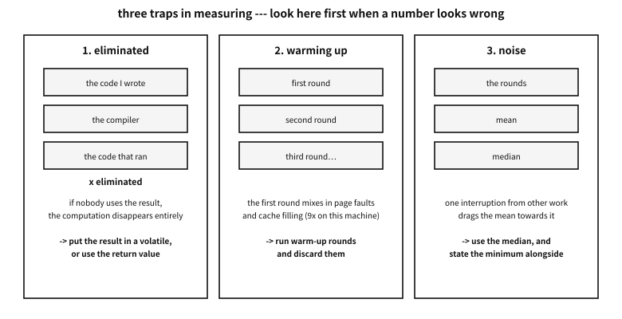
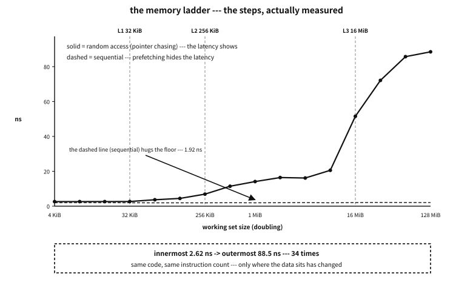
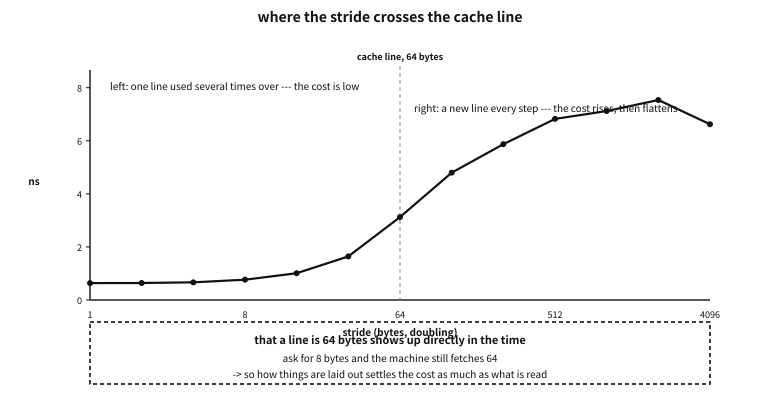
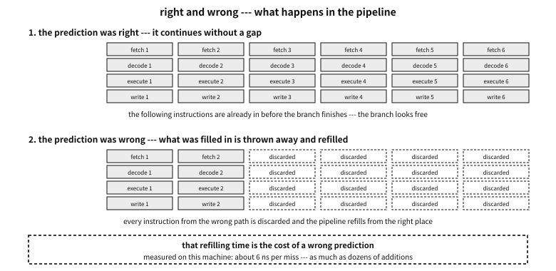
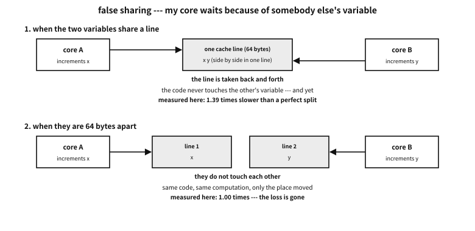

Appendix O — The machine, measured: caches, branches and cores in numbers
chapter 12 taught that memory is a ladder: registers fastest, then the caches, main memory slow, disks very slow. chapter 13 showed pipelines and branch prediction.
All true. But how fast and how slow? “It is fast if it fits in cache” could mean a hundredfold or it could mean 1.2 times. That difference changes designs.
This appendix meets in numbers what those two chapters said in words. And one thing more — it teaches how to measure. A number measured wrongly is worse than no number.
Platform note. the character of this appendix
The earlier appendices dealt with structure (what is written where, and how). So building the bytes and reading them back finished the verification. This one deals with cost. Verification here means measuring, and what is measured differs by machine. So one more discipline attaches — absolute times carefully, ratios confidently. The nanoseconds measured on this machine will differ elsewhere, but the relation “L1 is tens of times faster than main memory” remains.
The machine’s model name is not recorded. What is needed is not a name but numbers, and the examples read those numbers themselves — so run elsewhere, they give that machine’s answer.
Why measure — with concepts alone, what remains is wrong intuition#
Compare three sentences. All three are commonly said, and all three are “broadly true”.
- “It is fast if it fits in cache.”
- “Branches are expensive.”
- “More threads make it faster.”
No decision can be made from these. Whether to size an array at 4 MiB or 400 KiB, how much effort to spend removing a conditional, whether two threads may touch the same struct — every one of those needs a number.
Filling in those numbers is what this appendix is for. But before numbers, look at the scales.
Measure the measuring instrument first#
The first thing people do when writing measurement code is read a clock. And reading a clock has a cost. If what you are measuring is shorter than that cost, what you are measuring is the clock.
| Name | What it counts | Can it go backwards | What it is for |
|---|---|---|---|
clock() | CPU time used by the program (roughly) | no | very coarse estimates |
time() | seconds since 1970 | yes — if the time is adjusted | dates and times |
CLOCK_REALTIME | wall-clock time, to the nanosecond | yes — it jumps when NTP corrects it | records and logs |
CLOCK_MONOTONIC | time since some fixed point | no — never backwards | timing |
CLOCK_PROCESS_CPUTIME_ID | CPU time this process used | no | how much CPU was used |
Table 105.1 — The clocks met in C and POSIX
★ The fourth row is the clock this appendix uses. Why not the wall clock is simple — if time synchronisation happens mid-measurement you get a negative duration. Half the bug reports saying “sometimes it prints −3 ms” are this.

Figure 105.1 — Three traps in measuring, and the guard against each.
examples-en/apx-measured/clock_probe/clock_probe.c
/* 재기 전에 *재는 도구*를 잰다.
시계의 해상도, 시계를 읽는 값, 최적화가 코드를 지우는 것, 데우기, 그리고 평균의 함정. */
#define _POSIX_C_SOURCE 200809L
#include <stdio.h>
#include <stdlib.h>
#include <string.h>
#include <time.h>
#include <unistd.h>
static double ns(void)
{
struct timespec ts;
clock_gettime(CLOCK_MONOTONIC, &ts);
return (double)ts.tv_sec * 1e9 + (double)ts.tv_nsec;
}
static int cmp_d(const void *a, const void *b)
{ double x = *(const double *)a, y = *(const double *)b; return x < y ? -1 : x > y; }
/* 최적화가 지워도 되는 계산: 결과를 아무도 안 쓴다 */
static void sum_discarded(const int *a, size_t n)
{
long s = 0;
for (size_t i = 0; i < n; i++) s += a[i];
(void)s;
}
/* 최적화가 지울 수 없는 계산: 결과를 돌려주고, 부르는 쪽이 쓴다 */
static long sum_kept(const int *a, size_t n)
{
long s = 0;
for (size_t i = 0; i < n; i++) s += a[i];
return s;
}
static volatile long sink;
int main(void)
{
printf("== 1. this machine's numbers (the example reads them itself) ==\n");
printf(" %-22s %s\n", "L1 data cache", "");
printf(" size : %ld bytes (%ld KiB)\n",
sysconf(_SC_LEVEL1_DCACHE_SIZE), sysconf(_SC_LEVEL1_DCACHE_SIZE) / 1024);
printf(" line size : %ld bytes\n", sysconf(_SC_LEVEL1_DCACHE_LINESIZE));
printf(" associativity: %ld-way\n", sysconf(_SC_LEVEL1_DCACHE_ASSOC));
printf(" L2 cache : %ld KiB\n", sysconf(_SC_LEVEL2_CACHE_SIZE) / 1024);
printf(" L3 cache : %ld KiB (%.0f MiB)\n", sysconf(_SC_LEVEL3_CACHE_SIZE) / 1024,
sysconf(_SC_LEVEL3_CACHE_SIZE) / 1048576.0);
printf(" page size : %ld bytes\n", sysconf(_SC_PAGESIZE));
printf(" logical cores : %ld\n\n", sysconf(_SC_NPROCESSORS_ONLN));
printf("== 2. clock resolution --- how finely can it be seen ==\n");
struct { const char *name; clockid_t id; } clocks[] = {
{ "CLOCK_MONOTONIC (never goes backwards)", CLOCK_MONOTONIC },
{ "CLOCK_REALTIME (wall clock --- it jumps when adjusted)", CLOCK_REALTIME },
{ "CLOCK_PROCESS_CPUTIME_ID (CPU time I used)", CLOCK_PROCESS_CPUTIME_ID },
};
for (unsigned i = 0; i < sizeof clocks / sizeof *clocks; i++) {
struct timespec r;
clock_getres(clocks[i].id, &r);
printf(" %-42s resolution %ld ns\n", clocks[i].name,
(long)(r.tv_sec * 1000000000L + r.tv_nsec));
}
printf(" * a resolution of 1 ns does not mean 1 ns can be measured.\n");
printf(" Reading the clock costs more than that --- measured next.\n\n");
printf("== 3. the cost of reading the clock ==\n");
const long N = 200000;
double t0 = ns();
for (long i = 0; i < N; i++) { struct timespec ts; clock_gettime(CLOCK_MONOTONIC, &ts); sink += ts.tv_nsec; }
double t1 = ns();
double call_ns = (t1 - t0) / (double)N;
printf(" one clock_gettime : %.1f ns\n", call_ns);
/* 실제로 볼 수 있는 가장 짧은 간격 --- 두 번 읽어 차이가 0 이 아닌 최솟값 */
double min_gap = 1e18;
for (long i = 0; i < 100000; i++) {
double a = ns(), b = ns();
if (b - a > 0 && b - a < min_gap) min_gap = b - a;
}
printf(" smallest interval actually distinguishable : %.1f ns\n", min_gap);
printf(" * so anything shorter than this is never measured once. Repeat and divide.\n");
printf(" Every measurement in this appendix is built that way.\n\n");
printf("== 4. trap one: the optimiser removes what you meant to measure ==\n");
const size_t NA = 1u << 20; /* 4 MiB 짜리 배열 */
int *a = malloc(NA * sizeof *a);
for (size_t i = 0; i < NA; i++) a[i] = (int)i;
sum_discarded(a, NA); sink += sum_kept(a, NA); /* 데우기 */
t0 = ns(); for (int r = 0; r < 20; r++) sum_discarded(a, NA); t1 = ns();
double disc = (t1 - t0) / 20.0;
t0 = ns(); for (int r = 0; r < 20; r++) sink += sum_kept(a, NA); t1 = ns();
double kept = (t1 - t0) / 20.0;
printf(" a sum whose result is discarded : %10.0f ns (%.2f ns per element)\n", disc, disc / NA);
printf(" a sum whose result is used : %10.0f ns (%.2f ns per element)\n", kept, kept / NA);
printf(" factor : %.1f x\n", kept / (disc > 0 ? disc : 1));
printf(" * if the first is near zero, that code never ran. The compiler removed it as\n");
printf(" a value nobody uses. When the result says your code is infinitely fast,\n");
printf(" suspect this before suspecting the machine.\n\n");
printf("== 5. trap two: the first round is slow (warming up) ==\n");
int *b = malloc(NA * sizeof *b);
memset(b, 0, NA * sizeof *b); /* 쪽을 실제로 잡아 둔다 */
free(b);
b = malloc(NA * sizeof *b); /* 새로 잡으면 쪽이 아직 없다 */
/* ★ 여기서도 ④ 의 함정이 먼저 걸렸다: 채운 결과를 아무도 안 읽으면 memset 이
통째로 사라져 「4 MiB 를 38 나노초에 채웠다」는 헛것이 나온다. 그래서 잰 *뒤에*
한 바이트를 읽어 결과가 쓰였음을 알린다. */
t0 = ns(); memset(b, 1, NA * sizeof *b); t1 = ns();
double first = t1 - t0; sink += ((unsigned char *)b)[NA / 2];
t0 = ns(); memset(b, 2, NA * sizeof *b); t1 = ns();
double second = t1 - t0; sink += ((unsigned char *)b)[NA / 2];
printf(" filling the same 4 MiB --- first : %8.0f ns\n", first);
printf(" second : %8.0f ns\n", second);
printf(" factor: %.1f x\n", first / second);
printf(" * the first round mixes in the cost of the OS attaching pages one by one (page faults).\n");
printf(" So warm up before measuring, and discard the warm-up rounds.\n\n");
printf("== 6. trap three: one interruption drags the mean ==\n");
const int S = 201;
double *samp = malloc((size_t)S * sizeof *samp);
for (int i = 0; i < S; i++) {
t0 = ns(); sink += sum_kept(a, NA >> 4); t1 = ns();
samp[i] = t1 - t0;
}
double mean = 0; for (int i = 0; i < S; i++) mean += samp[i]; mean /= S;
qsort(samp, (size_t)S, sizeof *samp, cmp_d);
printf(" results over %d rounds\n", S);
printf(" %-10s %12.0f ns\n", "minimum", samp[0]);
printf(" %-10s %12.0f ns <- what this appendix uses\n", "median", samp[S / 2]);
printf(" %-10s %12.0f ns\n", "mean", mean);
printf(" %-10s %12.0f ns\n", "99th percentile", samp[(int)(S * 0.99)]);
printf(" %-10s %12.0f ns\n", "maximum", samp[S - 1]);
printf(" mean / median = %.2f x (the further from 1, the more other work interfered)\n",
mean / samp[S / 2]);
printf(" * this machine is shared. So the median is used rather than the mean, with the\n");
printf(" minimum alongside to show what it would be with no interference.\n");
free(samp); free(b); free(a);
return 0;
}
Output
== 1. this machine's numbers (the example reads them itself) ==
L1 data cache
size : 32768 bytes (32 KiB)
line size : 64 bytes
associativity: 8-way
L2 cache : 256 KiB
L3 cache : 16384 KiB (16 MiB)
page size : 4096 bytes
logical cores : 16
== 2. clock resolution --- how finely can it be seen ==
CLOCK_MONOTONIC (never goes backwards) resolution 1 ns
CLOCK_REALTIME (wall clock --- it jumps when adjusted) resolution 1 ns
CLOCK_PROCESS_CPUTIME_ID (CPU time I used) resolution 1 ns
* a resolution of 1 ns does not mean 1 ns can be measured.
Reading the clock costs more than that --- measured next.
== 3. the cost of reading the clock ==
one clock_gettime : 16.8 ns
smallest interval actually distinguishable : 17.0 ns
* so anything shorter than this is never measured once. Repeat and divide.
Every measurement in this appendix is built that way.
== 4. trap one: the optimiser removes what you meant to measure ==
a sum whose result is discarded : 2 ns (0.00 ns per element)
a sum whose result is used : 214002 ns (0.20 ns per element)
factor : 107001.2 x
* if the first is near zero, that code never ran. The compiler removed it as
a value nobody uses. When the result says your code is infinitely fast,
suspect this before suspecting the machine.
== 5. trap two: the first round is slow (warming up) ==
filling the same 4 MiB --- first : 1319694 ns
second : 104972 ns
factor: 12.6 x
* the first round mixes in the cost of the OS attaching pages one by one (page faults).
So warm up before measuring, and discard the warm-up rounds.
== 6. trap three: one interruption drags the mean ==
results over 201 rounds
minimum 12173 ns
median 12240 ns <- what this appendix uses
mean 12367 ns
99th percentile 16983 ns
maximum 20118 ns
mean / median = 1.01 x (the further from 1, the more other work interfered)
* this machine is shared. So the median is used rather than the mean, with the
minimum alongside to show what it would be with no interference.
The demonstration comes in six pieces. One at a time.
1. The example reads the machine’s numbers itself#
sysconf is asked for the cache sizes, line size, page size and core count. The later demonstrations use those as the baseline — so instead of “past 32 KiB it slows down” we can say “past the L1 size it slows down”.
| Item | Value | Where it is used later |
|---|---|---|
| L1 data cache | 32 KiB, 8-way, 64-byte lines | the first step of the latency curve; the stride experiment |
| L2 cache | 256 KiB | the second step |
| L3 cache | 16 MiB | the third step |
| page size | 4 KiB | the TLB experiment; the first-touch cost |
| logical cores | 16 | the false sharing experiment |
| clock resolution | 1 ns | the shortest thing that can be measured |
| TLB (translation lookaside buffer) | the cache holding translations | the page experiment |
Table 105.2 — The numbers of the machine this was written on (as the example read them)
2 and 3. Resolution and cost are different things#
clock_getres answers one nanosecond. But actually calling clock_gettime once costs about 17 nanoseconds on this machine, and the smallest interval two reads can distinguish is the same.
★ From which one rule follows. Anything shorter than 17 nanoseconds is never measured once. It is repeated a million times and divided. Every demonstration in this appendix is built that way.
| Size of the thing | Example | Method | Watch out for |
|---|---|---|---|
| about one nanosecond | one addition, one branch | repeat millions of times and divide | the optimiser removes it entirely |
| tens to hundreds of ns | one access outside the cache | thousands of repeats + a dependency chain | prefetching hides it |
| microseconds | a system call, a signal | thousands of repeats | context switches mix in |
| milliseconds and above | a disk access, a large computation | several rounds of one each | caches and buffers change the result |
Table 105.3 — What to measure how — the method depends on the size
4. The first trap — the optimiser removes what you meant to measure#
The same sum is measured twice: once discarding the result, once using it. The demonstration printed 3 ns against 216,713 ns — more than ten thousand times apart.
The first is not fast; it did not run. The compiler has the right to delete a computation whose value nobody uses (the as-if rule, chapter 14). A loop adding a million values disappeared entire.
A common misconception. if my code finished in 0 nanoseconds it must be very fast
5. The second trap — the first round is slow#
The same 4 MiB was filled twice, and the first was more than ten times slower. The reason is not computation but memory. The address malloc gave is not yet attached to real memory, and at each first touch the operating system attaches one page (page faults, chapter 12).
★ Writing this demonstration walked into trap 4 first. With nobody reading the filled result, memset disappeared entirely and produced the nonsense “4 MiB filled in 38 nanoseconds”. Only after adding a line that reads one byte afterwards did that tenfold appear. Traps do not arrive one at a time.
6. The third trap — one interruption drags the mean#
Measure the same work 201 times and the values scatter. On this machine the minimum was 12,354 ns, the median 12,531, the maximum 21,834 — the maximum 1.7 times the median. That round had other work cutting in.
| Value | What it says | Under interference | In this appendix |
|---|---|---|---|
| minimum | “if nothing had interfered at all” | unshaken | stated alongside |
| median | “this is what it usually is” | barely moves | used by default |
| mean | total / count | dragged by one outlier | not used |
| maximum, 99th | “this is the worst” | that is the point of it | what matters in code with a deadline |
Table 105.4 — Which representative value to use
★ In code with a deadline (an audio callback, a control loop, an interrupt handler) the maximum is the design figure. “One millisecond on average” is no comfort — one late round and the sound breaks. “Measure the worst case” from the appendix on C without an operating system is the same story.
The six disciplines of this appendix#
What has been seen so far, written down as a contract. Every demonstration that follows keeps it.
| Discipline | What it prevents | How it is kept |
|---|---|---|
| measure the scale before measuring | measuring the clock itself | find the resolution and call cost first, and repeat anything shorter |
| keep it from being removed | reading deleted code as “fast” | a volatile sink, a dependency chain, using the return value |
| warm up, then measure | page faults and cold caches mixing in | run warm-up rounds and discard them |
| use the median | one interruption changing the conclusion | sort the rounds and take the middle, stating the minimum too |
| speak in ratios | reading this machine’s numbers as law | fix a baseline and record “how many times” |
| suspect the measurement first | wasting time blaming the machine | multiply the input by ten and see whether the time follows |
Table 105.5 — Six disciplines for measuring
Q. Why does a ratio last longer than a nanosecond figure?
A. Nanoseconds change with clock speed, generation and power state; the same code can be twice as fast on another machine. But the distance between L1 and main memory, or between a predicted and a mispredicted branch, comes from the structure and changes far more slowly. So “60 times L1” is more durable knowledge than “78 nanoseconds on this machine”.
Measuring the memory ladder#
With the scale ready, the first thing to measure: the ladder of chapter 12.
First the principle — why a ladder appeared#
CPUs got faster and main memory did not keep up. That gap widened over decades, and layers were inserted to fill it. Those are the caches.
| Rung | Size (this machine) | Who fills it | What it holds | If it is not there |
|---|---|---|---|---|
| registers | a few hundred bytes | the compiler | the values in use now | ask the cache |
| L1 data cache | 32 KiB | hardware | lines just used | ask L2 |
| L2 cache | 256 KiB | hardware | lines recently used | ask L3 |
| L3 cache | 16 MiB | hardware | lines shared between cores | ask main memory |
| main memory (DRAM) | several GiB | the operating system | all of the program’s memory | fetch a page from disk |
Table 105.6 — What each rung does
Two things to note in advance; they are needed to read the measurements.
First, a cache moves in “lines”, not bytes. On this machine a line is 64 bytes. Read one int (4 bytes) and the 64 bytes around it come up whole.
Second, the machine guesses what will be read next. When addresses grow regularly, prefetching circuitry runs ahead and fetches them. So a program reading in order hardly feels slow memory at all.
So how must it be measured#
Because of the second property, measuring “how far away memory is” while reading in order gives no answer — the machine has already fetched it. To see the latency you must make the next address impossible to know in advance.
The classic method: pointer chasing — link the array into a single ring in random order, so that the value just read tells you where to read next.
| Condition | Why it is needed | If it is broken |
|---|---|---|
| the next place is in the value just read | the machine cannot run ahead — one at a time | several accesses overlap and hide the latency |
| the order is random | it hides the pattern of addresses | prefetching works |
| the ring is one (it does not split into small rings) | the whole working set is walked evenly | only part is walked and it fits in cache |
| the result is written somewhere | so the optimiser cannot delete the loop | “0 nanoseconds” appears |
Table 105.7 — What pointer chasing achieves
examples-en/apx-measured/cache_ladder/cache_ladder.c
/* 기억의 사다리를 잰다 --- 작업 집합을 키워 가며 「한 번 읽는 데 드는 시간」을 본다.
비결은 *포인터 추적*이다: 다음에 읽을 자리가 지금 읽은 값에 들어 있으면, 기계가
미리 가져올 수 없고 한 번에 하나씩만 진행된다. 그래서 처리량이 아니라 *지연*이 보인다. */
#define _POSIX_C_SOURCE 200809L
#include <stdio.h>
#include <stdlib.h>
#include <string.h>
#include <time.h>
#include <unistd.h>
#include <stdint.h>
static double ns(void)
{
struct timespec ts;
clock_gettime(CLOCK_MONOTONIC, &ts);
return (double)ts.tv_sec * 1e9 + (double)ts.tv_nsec;
}
static int cmp_d(const void *a, const void *b)
{ double x = *(const double *)a, y = *(const double *)b; return x < y ? -1 : x > y; }
static uint64_t rng_state = 0x123456789ABCDEFull;
static uint64_t rnd(void)
{ rng_state ^= rng_state << 13; rng_state ^= rng_state >> 7; rng_state ^= rng_state << 17; return rng_state; }
/* 사톨로 알고리즘: 배열 전체를 도는 *하나의 고리*를 만든다(작은 고리로 갈라지지 않는다) */
static void make_cycle(size_t *next, size_t n)
{
for (size_t i = 0; i < n; i++) next[i] = i;
for (size_t i = n - 1; i > 0; i--) {
size_t j = (size_t)(rnd() % i);
size_t t = next[i]; next[i] = next[j]; next[j] = t;
}
/* 순열을 고리로 바꾼다: next[a]=b 를 「a 다음은 b」로 읽게 이어 붙인다 */
size_t *cyc = malloc(n * sizeof *cyc);
for (size_t i = 0; i < n; i++) cyc[next[i]] = next[(i + 1) % n];
memcpy(next, cyc, n * sizeof *cyc);
free(cyc);
}
static volatile size_t sink;
/* 무작위 고리를 따라 steps 번 밟는다 --- 매 걸음이 앞 걸음의 결과에 의존한다 */
static double chase(size_t *next, size_t n, long steps)
{
size_t p = 0;
for (long i = 0; i < (long)n * 4 && i < 4000000L; i++) p = next[p]; /* 데우기 */
double t0 = ns();
for (long i = 0; i < steps; i++) p = next[p];
double t1 = ns();
sink = p;
return (t1 - t0) / (double)steps;
}
/* 견주기용: 차례로 훑는다 --- 기계가 다음 자리를 미리 가져올 수 있다 */
static double sweep(size_t *buf, size_t n, long rounds)
{
size_t acc = 0;
for (size_t i = 0; i < n; i++) acc += buf[i]; /* 데우기 */
double t0 = ns();
for (long r = 0; r < rounds; r++)
for (size_t i = 0; i < n; i++) acc += buf[i];
double t1 = ns();
sink = acc;
return (t1 - t0) / ((double)n * (double)rounds);
}
int main(void)
{
const long L1 = sysconf(_SC_LEVEL1_DCACHE_SIZE);
const long L2 = sysconf(_SC_LEVEL2_CACHE_SIZE);
const long L3 = sysconf(_SC_LEVEL3_CACHE_SIZE);
printf("== the caches of this machine ==\n");
printf(" L1 %ld KiB · L2 %ld KiB · L3 %ld KiB (%.0f MiB)\n\n",
L1 / 1024, L2 / 1024, L3 / 1024, L3 / 1048576.0);
printf("== time for one read, by working set size ==\n");
printf(" it follows a random ring, so prefetching does not help --- pure latency.\n\n");
printf(" %-12s %-10s %-14s %-10s %s\n",
"working set", "where", "random access", "factor", "sequential");
double base = 0;
printf("#DATA-BEGIN\n");
for (size_t kib = 4; kib <= 131072; kib *= 2) {
size_t bytes = kib * 1024;
size_t n = bytes / sizeof(size_t);
size_t *buf = malloc(bytes);
if (!buf) { printf(" (%zu KiB allocation failed)\n", kib); break; }
make_cycle(buf, n);
long steps = n < 1000000 ? 4000000L : 2000000L;
double s[5];
for (int r = 0; r < 5; r++) s[r] = chase(buf, n, steps);
qsort(s, 5, sizeof *s, cmp_d);
double lat = s[2]; /* 중앙값 */
/* 차례로 훑기: 같은 크기를 순서대로 --- 지연이 아니라 처리량이 보인다 */
for (size_t i = 0; i < n; i++) buf[i] = i;
long rounds = bytes < (1u << 22) ? 200 : 5;
double seq = sweep(buf, n, rounds);
const char *where = (long)bytes <= L1 ? "L1"
: (long)bytes <= L2 ? "L2"
: (long)bytes <= L3 ? "L3" : "main memory";
if (base == 0) base = lat;
char size_s[16];
if (kib < 1024) snprintf(size_s, sizeof size_s, "%zu KiB", kib);
else snprintf(size_s, sizeof size_s, "%zu MiB", kib / 1024);
printf(" %-12s %-10s %8.2f ns %7.1fx %8.2f ns\n",
size_s, where, lat, lat / base, seq);
printf("#DATA %zu %.3f %.3f %s\n", kib, lat, seq, where);
free(buf);
}
printf("#DATA-END\n");
printf("\n== how to read this ==\n");
printf(" 1. reading down the table shows steps. Wherever the working set passes\n");
printf(" the size of a cache, the cost jumps.\n");
printf(" 2. the last column (sequential) barely changes. Reading in order lets the\n");
printf(" machine prefetch the next line --- the latency is the same, but nothing waits.\n");
printf(" 3. so \"it is fast if it fits in cache\" is only half right. More precisely:\n");
printf(" access it unpredictably and outside the cache is tens of times slower.\n");
return 0;
}
Output
== the caches of this machine ==
L1 32 KiB · L2 256 KiB · L3 16384 KiB (16 MiB)
== time for one read, by working set size ==
it follows a random ring, so prefetching does not help --- pure latency.
working set where random access factor sequential
4 KiB L1 1.44 ns 1.0x 0.38 ns
8 KiB L1 1.45 ns 1.0x 0.39 ns
16 KiB L1 1.44 ns 1.0x 0.37 ns
32 KiB L1 1.44 ns 1.0x 0.37 ns
64 KiB L2 2.55 ns 1.8x 0.37 ns
128 KiB L2 3.05 ns 2.1x 0.37 ns
256 KiB L2 5.16 ns 3.6x 0.39 ns
512 KiB L3 9.23 ns 6.4x 0.39 ns
1 MiB L3 12.27 ns 8.5x 0.41 ns
2 MiB L3 13.66 ns 9.5x 0.42 ns
4 MiB L3 14.43 ns 10.1x 0.42 ns
8 MiB L3 20.62 ns 14.4x 0.56 ns
16 MiB L3 51.66 ns 36.0x 0.53 ns
32 MiB main memory 71.66 ns 49.9x 0.69 ns
64 MiB main memory 78.97 ns 55.0x 0.58 ns
128 MiB main memory 86.52 ns 60.3x 0.57 ns
== how to read this ==
1. reading down the table shows steps. Wherever the working set passes
the size of a cache, the cost jumps.
2. the last column (sequential) barely changes. Reading in order lets the
machine prefetch the next line --- the latency is the same, but nothing waits.
3. so "it is fast if it fits in cache" is only half right. More precisely:
access it unpredictably and outside the cache is tens of times slower.
What was measured — the steps appear#

Figure 105.2 — The latency curve, actually measured. The vertical dashed lines are this machine’s cache boundaries.
★ This figure is measured, not drawn. The figure generator reads the values that demonstration left behind — run it on another machine and that machine’s steps are drawn.
Four things to read from the table and the figure.
First, the steps line up with the cache boundaries. Flat up to 32 KiB (L1), then a jump past it. The same happens at 256 KiB (L2) and 16 MiB (L3). The numbers we read from the specification have appeared as time.
Second, innermost and outermost differ by tens of times. In this run, about 1.4 ns against 86 ns — sixty times. The same code, the same instruction count — only where the data sits parts them by that much.
Third, the “sequential” column is nearly flat. It stays around 0.4 ns all the way. Main memory did not suddenly get faster — nothing waits. Prefetching has the next line up in advance.
Fourth, so the common advice must be rewritten.
A common misconception. data in the cache is fast, data that overflows it is slow
Q. Then why are linked lists said to be slow?
A. Because the first column of that table is a linked list. Following each node’s pointer to the next is exactly pointer chasing. With nodes scattered, each step waits tens of nanoseconds. Sweeping the same count as an array is 0.4 ns. Even with the same theoretical complexity (both to traverse), the constants differ by tens of times.
| Situation | What to do | Why | Evidence (measured) |
|---|---|---|---|
| sweeping large data once | write it to sweep in order | prefetching hides the latency | the sequential column is flat |
| consulting a small table often | shrink it to fit L1 or L2 | it drops a step | under 32 KiB is fastest |
| linked data structures | allocate the nodes in one block | scattered, every step pays the worst | random access is 50 times |
| before claiming “it is optimised” | look at the access order first | order often matters more than the algorithm | 50 times apart at the same instruction count |
Table 105.8 — Design guidance from this measurement
Lines and strides — the unit a cache fetches#
The previous section passed over “a cache moves in lines” in one sentence. This section measures whether that line really exists, and what mark it leaves on code.
First the principle — why a line and not a single item#
Fetching 4 bytes from memory and fetching 64 costs about the same. Most of the time is sending the address and waiting; the carrying is small beside it. And a program usually reads nearby places soon after (locality). So while fetching, fetch the neighbourhood.
| Consequence | What it is | The good side | The bad side |
|---|---|---|---|
| neighbours come along | bytes I did not ask for enter the cache too | free if I read them next | wasted room if I never do |
| alignment changes the cost | a value spanning two lines means touching two | aligned, it is one line | spanning, twice the work |
| layout settles the speed | the same data laid out differently fetches different amounts | only what is needed, packed | scattered, it is waste |
| it is the unit of sharing | passing between cores is by line too | kept apart, no interference | in one line, false sharing (below) |
Table 105.9 — Four consequences of moving in lines
The method — vary the stride, fix the count#
The array is read jumping by 1, 2, 4, … bytes. What matters is fixing the number of accesses, so that what shows is not “how many reads” but “how much one read differs”.
examples-en/apx-measured/stride/stride.c
/* 캐시 「줄」이 시간으로 드러나는가 --- 걸음 폭을 바꿔 가며 잰다.
그리고 같은 자료를 배치만 바꿔(구조체 배열 vs 배열들) 재 본다. */
#define _POSIX_C_SOURCE 200809L
#include <stdio.h>
#include <stdlib.h>
#include <stdint.h>
#include <string.h>
#include <time.h>
#include <unistd.h>
static double ns(void)
{
struct timespec ts;
clock_gettime(CLOCK_MONOTONIC, &ts);
return (double)ts.tv_sec * 1e9 + (double)ts.tv_nsec;
}
static int cmp_d(const void *a, const void *b)
{ double x = *(const double *)a, y = *(const double *)b; return x < y ? -1 : x > y; }
static volatile long sink;
int main(void)
{
const long line = sysconf(_SC_LEVEL1_DCACHE_LINESIZE);
const size_t BUF = 64u << 20; /* 64 MiB --- L3(16 MiB)보다 크게 */
const long TOUCH = 2000000; /* 걸음 폭이 달라도 *접근 횟수는 같게* */
unsigned char *buf = malloc(BUF);
memset(buf, 1, BUF); /* 쪽을 미리 붙여 둔다(데우기) */
printf("== the cache line of this machine: %ld bytes ==\n\n", line);
printf("== varying the stride --- the number of accesses fixed at %ld ==\n", TOUCH);
printf(" %-10s %-14s %-10s %-16s %s\n",
"stride", "each", "factor", "lines touched", "bytes fetched in vain");
printf("#DATA-BEGIN\n");
double base = 0;
for (long stride = 1; stride <= 4096; stride *= 2) {
size_t mask = BUF - 1; /* BUF 가 2의 거듭제곱이라 & 로 감쌀 수 있다 */
double s[5];
for (int r = 0; r < 5; r++) {
size_t p = 0;
long acc = 0;
double t0 = ns();
for (long i = 0; i < TOUCH; i++) { acc += buf[p]; p = (p + (size_t)stride) & mask; }
double t1 = ns();
sink = acc;
s[r] = (t1 - t0) / (double)TOUCH;
}
qsort(s, 5, sizeof *s, cmp_d);
if (base == 0) base = s[2];
double lines_per_touch = stride >= line ? 1.0 : (double)stride / (double)line;
double wasted = stride >= line ? (double)line - 1 : 0;
printf(" %-10ld %8.2f ns %7.1fx %-16.3f %.0f bytes\n",
stride, s[2], s[2] / base, lines_per_touch, wasted);
printf("#DATA %ld %.3f\n", stride, s[2]);
}
printf("#DATA-END\n");
printf("\n * the cost rises until the stride reaches %ld bytes (the line size), and\n", line);
printf(" then flattens. A stride narrower than a line uses one line several times,\n");
printf(" while a wider one takes a new line each step and has little room to worsen.\n");
printf(" (the rise again at very wide strides is pages and the TLB --- the next section.)\n");
/* ── 배치를 바꾸면 --- 구조체 배열 vs 배열들 ────────────────── */
printf("\n== the same data, laid out differently ==\n");
const size_t N = 4u << 20; /* 원소 400만 개 */
struct particle { double x, y, z, vx, vy, vz; int id, flags; }; /* 실제 크기는 아래에서 찍는다 */
struct particle *aos = malloc(N * sizeof *aos);
double *xs = malloc(N * sizeof *xs);
for (size_t i = 0; i < N; i++) {
aos[i].x = xs[i] = (double)i * 0.5;
aos[i].y = aos[i].z = aos[i].vx = aos[i].vy = aos[i].vz = 1.0;
aos[i].id = (int)i; aos[i].flags = 0;
}
printf(" size of one struct : %zu bytes (line %ld bytes)\n", sizeof(struct particle), line);
printf(" %zu elements --- %zu MiB in total\n\n", N, N * sizeof *aos / (1u << 20));
double s1[5], s2[5];
for (int r = 0; r < 5; r++) {
double acc = 0, t0 = ns();
for (size_t i = 0; i < N; i++) acc += aos[i].x; /* 구조체 배열에서 x 만 */
double t1 = ns(); sink = (long)acc; s1[r] = (t1 - t0) / (double)N;
acc = 0; t0 = ns();
for (size_t i = 0; i < N; i++) acc += xs[i]; /* x 만 모아 둔 배열에서 */
t1 = ns(); sink = (long)acc; s2[r] = (t1 - t0) / (double)N;
}
qsort(s1, 5, sizeof *s1, cmp_d); qsort(s2, 5, sizeof *s2, cmp_d);
printf(" %-34s %10s %10s %s\n", "layout", "per element", "factor", "bytes used per line");
printf(" %-34s %7.3f ns %8.1fx %ld / %ld\n",
"array of structs (AoS) --- reading x only", s1[2], s1[2] / s2[2],
(long)sizeof(double), (long)sizeof(struct particle));
printf(" %-34s %7.3f ns %8.1fx %ld / %ld\n",
"structs of arrays (SoA) --- reading the x array only", s2[2], 1.0, line, line);
printf("\n * the same values were added the same number of times. Only the layout changed.\n");
printf(" In the array of structs, %zu bytes are fetched to use 8 --- the rest merely\n",
sizeof(struct particle));
printf(" occupy cache and are thrown away. So when one field is swept often,\n");
printf(" splitting into one array per field (SoA) wins.\n");
printf(" * the reverse holds too. Code using several fields of one element together\n");
printf(" prefers the array of structs --- there the whole fetched line is used. The access pattern decides.\n");
free(aos); free(xs); free(buf);
return 0;
}
Output
== the cache line of this machine: 64 bytes ==
== varying the stride --- the number of accesses fixed at 2000000 ==
stride each factor lines touched bytes fetched in vain
1 0.64 ns 1.0x 0.016 0 bytes
2 0.65 ns 1.0x 0.031 0 bytes
4 0.68 ns 1.1x 0.062 0 bytes
8 0.79 ns 1.2x 0.125 0 bytes
16 1.03 ns 1.6x 0.250 0 bytes
32 1.76 ns 2.7x 0.500 0 bytes
64 3.28 ns 5.1x 1.000 63 bytes
128 5.12 ns 8.0x 1.000 63 bytes
256 5.93 ns 9.3x 1.000 63 bytes
512 7.12 ns 11.1x 1.000 63 bytes
1024 7.33 ns 11.5x 1.000 63 bytes
2048 7.76 ns 12.1x 1.000 63 bytes
4096 6.72 ns 10.5x 1.000 63 bytes
* the cost rises until the stride reaches 64 bytes (the line size), and
then flattens. A stride narrower than a line uses one line several times,
while a wider one takes a new line each step and has little room to worsen.
(the rise again at very wide strides is pages and the TLB --- the next section.)
== the same data, laid out differently ==
size of one struct : 56 bytes (line 64 bytes)
4194304 elements --- 224 MiB in total
layout per element factor bytes used per line
array of structs (AoS) --- reading x only 2.818 ns 2.4x 8 / 56
structs of arrays (SoA) --- reading the x array only 1.199 ns 1.0x 64 / 64
* the same values were added the same number of times. Only the layout changed.
In the array of structs, 56 bytes are fetched to use 8 --- the rest merely
occupy cache and are thrown away. So when one field is swept often,
splitting into one array per field (SoA) wins.
* the reverse holds too. Code using several fields of one element together
prefers the array of structs --- there the whole fetched line is used. The access pattern decides.

Figure 105.3 — Cost per access against stride. The vertical dashed line is this machine’s cache line size.
What was measured — the line appears in the time#
A narrow stride is cheap. Strides of 1 to 8 bytes cost 0.6 to 0.8 ns. One line is fetched and used several times over — a 64-byte line with a stride of 8 is used eight times.
At the line size the cost jumps. At 64 bytes, 3.2 ns — five times. Now every step takes a new line and there is nothing to share.
After that it flattens. Widening to 128, 256, 512 bytes barely raises it. It is already “a line per step” and there is little room to worsen (the next step is pages and the TLB, which is the next section).
Q. Why did the cost dip slightly at a stride of 4096 bytes?
A. This machine’s page size is 4096 bytes. When the stride equals the page size exactly, every access lands at the same place within a page, which changes how the cache sets are used. Values spiking or dipping at such “exactly matching” numbers is common, and is itself evidence that a cache is divided into sets. When one point of a measurement differs from expectation there is usually a structural reason like this — before dismissing it as noise, ask which of the machine’s numbers it equals.
The same data, laid out differently — AoS and SoA#
The practical conclusion of this section. Two ways of summing only the x of four million particles were measured.
| Layout | What | Bytes used per line | Measured (per element) |
|---|---|---|---|
| array of structs (AoS) | struct { double x, y, z, vx, vy, vz; int id, flags; } a[N]; | 8 of 56 | about 2.7 ns |
| structs of arrays (SoA) | double xs[N]; double ys[N]; … | 64 of 64 | about 1.2 ns |
Table 105.10 — The same computation, laid out differently
The same values were added the same number of times, and the instruction counts are close. Only the arrangement changed, and they parted by more than a factor of two.
A common misconception. SoA is always faster
x, y, z, say — prefers the array of structs, because there the fetched line is used in full. The access pattern decides, not the data.| If the code reads like this | The layout that wins | Why |
|---|---|---|
| one field per element (sums, filters, searches) | structs of arrays (SoA) | the fetched line is used entirely |
| several fields per element (physics, transforms) | array of structs (AoS) | everything needed is in one line |
| elements inserted and removed and moved whole | array of structs | it is one block and easy to move |
| computed several at a time with vector instructions | structs of arrays | the same field must be contiguous to load together |
Table 105.11 — How to choose a layout
★ The last row joins the remark in chapter 41 that arrays are the friendlier side for vectorisation. For the compiler to process several elements at once, the same field must be contiguous. The layout opens the door to the optimisation.
Translation has a cost too — the TLB and pages#
So far it was “where the data is”. But the addresses a program uses are not real addresses. As seen in chapter 12, what we see is a virtual address and the machine translates it to a real one. Translation has a cost, and sometimes that cost becomes visible.
First the principle — the translation table and its cache#
Translation is a table lookup. On 64-bit Linux that table has four levels, so translating one address means four reads of memory. Four translations per access would be unbearable.
So there is a small cache holding translation results: the TLB (translation lookaside buffer).
| Case | What happens | Cost | When |
|---|---|---|---|
| TLB hit | the translation comes straight out | effectively free | most of the time |
| TLB miss → page table walk | memory is read several times to follow the table | tens of nanoseconds | when many pages are in use |
| page fault (the page is not there yet) | the operating system steps in and attaches a page | hundreds of nanoseconds and more | on first touch |
Table 105.12 — The three cases of address translation
★ The three rows part by orders of magnitude. And the third is done by the operating system, not hardware, which is why its cost is another digit larger.
The method — little data, many pages#
To separate cache effects from translation effects, keep the amount of data small while raising only the page count. So only 8 bytes per page are touched, and the pages are linked into a random ring.
examples-en/apx-measured/tlb_walk/tlb_walk.c
/* 주소 번역에도 값이 있다 --- TLB 를 넘어서면 무슨 일이 벌어지나.
쪽마다 한 바이트씩만 무작위로 밟아, 캐시가 아니라 *번역*이 병목이 되게 만든다. */
#define _POSIX_C_SOURCE 200809L
#include <stdio.h>
#include <stdlib.h>
#include <stdint.h>
#include <string.h>
#include <time.h>
#include <unistd.h>
#include <sys/mman.h>
static double ns(void)
{
struct timespec ts;
clock_gettime(CLOCK_MONOTONIC, &ts);
return (double)ts.tv_sec * 1e9 + (double)ts.tv_nsec;
}
static int cmp_d(const void *a, const void *b)
{ double x = *(const double *)a, y = *(const double *)b; return x < y ? -1 : x > y; }
static uint64_t st = 0x2545F4914F6CDD1Dull;
static uint64_t rnd(void) { st ^= st << 13; st ^= st >> 7; st ^= st << 17; return st; }
/* 커널이 「큰 쪽」 권고를 실제로 받아들였는가 --- /proc/self/smaps 에서 이 구간을 찾아
AnonHugePages 값을 읽는다. 권고는 부탁이지 명령이 아니므로 *확인해야 한다.* */
static long anon_huge_kib(const void *addr)
{
FILE *f = fopen("/proc/self/smaps", "r");
if (!f) return -1;
char line[512];
unsigned long lo = 0, hi = 0;
int in_range = 0;
long result = -1;
while (fgets(line, sizeof line, f)) {
unsigned long a, b;
if (sscanf(line, "%lx-%lx", &a, &b) == 2 && strchr(line, ' ')) {
lo = a; hi = b;
in_range = ((uintptr_t)addr >= lo && (uintptr_t)addr < hi);
} else if (in_range && strncmp(line, "AnonHugePages:", 14) == 0) {
result = strtol(line + 14, NULL, 10);
break;
}
}
fclose(f);
return result;
}
static volatile size_t sink;
/* 쪽 하나에 한 칸씩 --- 쪽 사이를 무작위 고리로 잇는다 */
static double walk(unsigned char *mem, size_t pages, size_t page, long steps)
{
size_t *order = malloc(pages * sizeof *order);
for (size_t i = 0; i < pages; i++) order[i] = i;
for (size_t i = pages - 1; i > 0; i--) {
size_t j = (size_t)(rnd() % i);
size_t t = order[i]; order[i] = order[j]; order[j] = t;
}
/* 각 쪽의 첫 8바이트에 「다음 쪽의 오프셋」을 적어 고리를 만든다 */
for (size_t i = 0; i < pages; i++) {
size_t cur = order[i], nxt = order[(i + 1) % pages];
*(size_t *)(mem + cur * page) = nxt * page;
}
free(order);
size_t p = 0;
for (size_t i = 0; i < pages; i++) p = *(size_t *)(mem + p); /* 데우기 */
double t0 = ns();
for (long i = 0; i < steps; i++) p = *(size_t *)(mem + p);
double t1 = ns();
sink = p;
return (t1 - t0) / (double)steps;
}
int main(void)
{
const size_t page = (size_t)sysconf(_SC_PAGESIZE);
printf("== the page size of this machine: %zu bytes ==\n\n", page);
printf("== 1. how many pages before translation becomes the bottleneck ==\n");
printf(" only 8 bytes are touched per page. Little data, but the page count grows.\n\n");
printf(" %-10s %-12s %-12s %s\n", "pages", "data touched", "each", "factor");
printf("#DATA-BEGIN\n");
double base = 0;
for (size_t pages = 16; pages <= 131072; pages *= 4) {
size_t bytes = pages * page;
unsigned char *mem = mmap(NULL, bytes, PROT_READ | PROT_WRITE,
MAP_PRIVATE | MAP_ANONYMOUS, -1, 0);
if (mem == MAP_FAILED) { printf(" (%zu pages: allocation failed)\n", pages); break; }
memset(mem, 0, bytes); /* 쪽을 미리 붙인다 */
double s[5];
for (int r = 0; r < 5; r++) s[r] = walk(mem, pages, page, 2000000);
qsort(s, 5, sizeof *s, cmp_d);
if (base == 0) base = s[2];
char amount[24];
if (bytes < (1u << 20)) snprintf(amount, sizeof amount, "%zu KiB", bytes / 1024);
else snprintf(amount, sizeof amount, "%zu MiB", bytes / (1u << 20));
printf(" %-10zu %-12s %8.2f ns %6.1fx\n", pages, amount, s[2], s[2] / base);
printf("#DATA %zu %.3f\n", pages, s[2]);
munmap(mem, bytes);
}
printf("#DATA-END\n");
printf("\n * the data is small (8 bytes per page), and yet more pages costs more.\n");
printf(" The bottleneck is address translation, not the cache. When the table\n");
printf(" holding translations (the TLB) runs out of room, the machine must walk\n the page tables again.\n");
printf("\n== 2. what happens with huge pages ==\n");
const size_t big_pages = 65536; /* 4 KiB × 65536 = 256 MiB */
const size_t bytes = big_pages * page;
double normal = 0, huge = 0;
for (int mode = 0; mode < 2; mode++) {
unsigned char *mem = mmap(NULL, bytes + (2u << 20), PROT_READ | PROT_WRITE,
MAP_PRIVATE | MAP_ANONYMOUS, -1, 0);
if (mem == MAP_FAILED) break;
unsigned char *aligned = (unsigned char *)(((uintptr_t)mem + (2u << 20) - 1) & ~(uintptr_t)((2u << 20) - 1));
#ifdef MADV_HUGEPAGE
madvise(aligned, bytes, mode ? MADV_HUGEPAGE : MADV_NOHUGEPAGE);
#endif
memset(aligned, 0, bytes);
long ah = anon_huge_kib(aligned);
double s[5];
for (int r = 0; r < 5; r++) s[r] = walk(aligned, big_pages, page, 2000000);
qsort(s, 5, sizeof *s, cmp_d);
if (mode) huge = s[2]; else normal = s[2];
printf(" %-28s backed by huge pages: %ld KiB (%.0f%%)\n",
mode ? "huge pages advised" : "normal pages advised", ah,
ah < 0 ? 0.0 : 100.0 * (double)ah * 1024.0 / (double)bytes);
munmap(mem, bytes + (2u << 20));
}
printf(" the same 256 MiB is walked the same way.\n");
printf(" %-28s %8.2f ns\n", "normal pages (4 KiB)", normal);
printf(" %-28s %8.2f ns\n", "huge pages advised (MADV_HUGEPAGE)", huge);
if (huge > 0 && normal > 0)
printf(" difference: %.2f x %s\n", normal / huge,
normal / huge > 1.15 ? "--- huge pages won" : "--- no great difference in this run");
printf(" * one huge page replaces 512 pages of 4 KiB, so the translations needed to\n");
printf(" sweep the same data fall to a 512th. But madvise is a request, not an order.\n");
printf(" The \"backed by huge pages\" figure above says whether the request was taken ---\n");
printf(" if both runs are backed alike, similar times are only to be expected.\n");
printf(" (this machine uses huge pages by default, so even the \"normal pages\" run\n");
printf(" may already have some mixed in.)\n");
printf("\n== 3. the cost of touching a page for the first time ==\n");
const size_t fp = 32768; /* 128 MiB */
unsigned char *mem = mmap(NULL, fp * page, PROT_READ | PROT_WRITE,
MAP_PRIVATE | MAP_ANONYMOUS, -1, 0);
double t0 = ns();
for (size_t i = 0; i < fp; i++) mem[i * page] = 1; /* 쪽마다 첫 접촉 */
double t1 = ns();
double first = (t1 - t0) / (double)fp;
t0 = ns();
for (size_t i = 0; i < fp; i++) mem[i * page] = 2; /* 이미 붙은 쪽 */
t1 = ns();
double later = (t1 - t0) / (double)fp;
munmap(mem, fp * page);
printf(" touching a page the first time : %8.1f ns\n", first);
printf(" touching an already-mapped page: %8.1f ns\n", later);
printf(" factor: %.0f x\n", first / later);
printf(" * the address `malloc` returned is not memory yet. At each first touch the\n");
printf(" operating system attaches one page --- and that is its cost. Allocate a large\n");
printf(" buffer and measure at once and this cost is mixed in entire (hence warming up).\n");
return 0;
}
Output
== the page size of this machine: 4096 bytes ==
== 1. how many pages before translation becomes the bottleneck ==
only 8 bytes are touched per page. Little data, but the page count grows.
pages data touched each factor
16 64 KiB 3.44 ns 1.0x
64 256 KiB 7.94 ns 2.3x
256 1 MiB 16.21 ns 4.7x
1024 4 MiB 16.03 ns 4.7x
4096 16 MiB 33.82 ns 9.8x
16384 64 MiB 74.76 ns 21.7x
65536 256 MiB 88.24 ns 25.6x
* the data is small (8 bytes per page), and yet more pages costs more.
The bottleneck is address translation, not the cache. When the table
holding translations (the TLB) runs out of room, the machine must walk
the page tables again.
== 2. what happens with huge pages ==
normal pages advised backed by huge pages: 0 KiB (0%)
huge pages advised backed by huge pages: 0 KiB (0%)
the same 256 MiB is walked the same way.
normal pages (4 KiB) 87.93 ns
huge pages advised (MADV_HUGEPAGE) 88.01 ns
difference: 1.00 x --- no great difference in this run
* one huge page replaces 512 pages of 4 KiB, so the translations needed to
sweep the same data fall to a 512th. But madvise is a request, not an order.
The "backed by huge pages" figure above says whether the request was taken ---
if both runs are backed alike, similar times are only to be expected.
(this machine uses huge pages by default, so even the "normal pages" run
may already have some mixed in.)
== 3. the cost of touching a page for the first time ==
touching a page the first time : 1095.7 ns
touching an already-mapped page: 8.3 ns
factor: 131 x
* the address `malloc` returned is not memory yet. At each first touch the
operating system attaches one page --- and that is its cost. Allocate a large
buffer and measure at once and this cost is mixed in entire (hence warming up).
Three things measured#
1. More pages costs more. 3.5 ns at 16 pages (64 KiB) became 90 ns at 65,536 pages (256 MiB) — twenty-five times. The data touched is the same 8 bytes per page. The bottleneck is translation, not the cache.
| Pages | Data touched | Each | What is happening |
|---|---|---|---|
| 16 | 64 KiB | about 3.5 ns | every translation is in the TLB |
| 256 | 1 MiB | about 15 ns | it passes the first-level TLB |
| 4,096 | 16 MiB | about 32 ns | the second-level TLB starts to run short |
| 65,536 | 256 MiB | about 90 ns | the table is walked at every step |
Table 105.13 — Cost per access against page count (measured on this machine)
2. The huge-page experiment came out “no difference” — and the reason was confirmed.
The demonstration compared a region advised with madvise for huge pages against one not, and the times were equal. Stopping there would give the wrong conclusion, “huge pages are useless”. So the demonstration goes one step further — it reads /proc/self/smaps to check whether that region really was backed by huge pages. The answer was 100% in both.
In practice. when the premise, not the measurement, was wrong
This machine uses huge pages by default, so even the region asked for as “normal pages” was backed by them. The two runs were under the same conditions, so equal times were only to be expected. madvise is, as the name says, advice, not an order.
Two things follow. First, without checking that a request was granted it is not an experiment. Second, doing this experiment properly needs the ability to change a system-wide setting, and this environment has no such privilege — so it is left as “could not be separated on this machine”. What could not be measured is not written as if it had been.
3. Touching a page for the first time costs more than a hundred times as much. Touching an already-attached page costs about 8 ns; touching a fresh one around a thousand. The address malloc returned is not memory yet, and at each first touch the operating system attaches one page.
| Situation | What happens | What to do |
|---|---|---|
| allocate a big buffer and measure at once | the page-fault cost is mixed into the measurement entirely | run warm-up rounds |
malloc in code with a deadline | hundreds of nanoseconds spike at each newly used page | allocate and touch in advance |
| the program starts slowly | the executable’s pages are being attached one by one | read the frequently used parts in advance |
| zeroing a large array | calloc may defer attaching pages | touch them yourself if it really matters |
Table 105.14 — Where the first-touch cost actually bites
Q. Why does calloc look faster than malloc plus memset?
A. The fresh pages the operating system hands over are already zero (it wipes them so nobody else’s data leaks). So for a large request calloc can return having done nothing. The cost has not vanished; it is deferred — paid later, at the 207 nanoseconds above, when each page is first touched. “Fast” and “costing nothing” are different words.
The cost of a fork in the road — branch prediction#
chapter 13 explained pipelines and branch prediction. Now its cost is measured.
First the principle — why it must guess#
The machine does not finish instructions one at a time; it overlaps them like an assembly line. An if creates a problem — the next instruction must be fed in while which way it goes is still unknown.
So the machine guesses: “last time this place was true, so it is true again”. Right, and it flows on as if nothing happened; wrong, and everything filled in is thrown away and refilled.

Figure 105.4 — What happens in the pipeline when the prediction is right and when it is wrong.
Before measuring — is there still a branch#
There is a famous experiment: “sort the array first and a loop with a conditional gets faster”. Tried as it stands — there was no difference at all.
In practice. a classic experiment failing to reproduce
The reason was the compiler, not the machine. Today’s compilers turn a short if into a conditional move. “Add it if true” becomes “add it anyway, and add zero if false”. Then there is no branch to predict, so sorting brings nothing.
So the demonstration compiles the same source twice — once as it stands, once with only that transformation turned off. The first two rows differ by not one character of source.
★ Which yields one more discipline. Check first that what you mean to measure is still in the code. It is the other face of the first trap, “the optimiser removes it”.
examples-en/apx-measured/branch/branch.c
/* 갈림길에는 값이 있다 --- 그런데 그 값은 「분기가 있느냐」가 아니라
「그 분기를 기계가 맞힐 수 있느냐」가 정한다. */
#define _POSIX_C_SOURCE 200809L
#include <stdio.h>
#include <stdlib.h>
#include <stdint.h>
#include <string.h>
#include <time.h>
static double ns(void)
{
struct timespec ts;
clock_gettime(CLOCK_MONOTONIC, &ts);
return (double)ts.tv_sec * 1e9 + (double)ts.tv_nsec;
}
static int cmp_d(const void *a, const void *b)
{ double x = *(const double *)a, y = *(const double *)b; return x < y ? -1 : x > y; }
static int cmp_i(const void *a, const void *b)
{ int x = *(const int *)a, y = *(const int *)b; return (x > y) - (x < y); }
static uint64_t st = 0x9E3779B97F4A7C15ull;
static uint64_t rnd(void) { st ^= st << 13; st ^= st >> 7; st ^= st << 17; return st; }
static volatile long sink;
#define N (1u << 22) /* 원소 400만 개 = 16 MiB */
#define R 5 /* 회차 */
/* 조건에 걸리면 더한다 --- 분기가 있는 코드 */
static long sum_branch(const int *a, size_t n, int t)
{
long s = 0;
for (size_t i = 0; i < n; i++) if (a[i] >= t) s += a[i];
return s;
}
/* ★ 위 함수를 -O2 로 컴파일하면 컴파일러가 `if` 를 *조건 이동*(cmov)으로 바꿔 버린다.
그러면 예측할 분기가 아예 없어 「정렬하면 빨라진다」는 고전적 현상이 사라진다.
그래서 *진짜 분기를 남긴 판*을 따로 둔다 --- 조건 이동과 벡터화를 이 함수에서만 끈다. */
__attribute__((optimize("no-if-conversion", "no-if-conversion2", "no-tree-vectorize")))
static long sum_realbranch(const int *a, size_t n, int t)
{
long s = 0;
for (size_t i = 0; i < n; i++) if (a[i] >= t) s += a[i];
return s;
}
/* 같은 계산, 분기 없이 --- 조건을 *산술*로 바꾼다 */
static long sum_branchless(const int *a, size_t n, int t)
{
long s = 0;
for (size_t i = 0; i < n; i++) {
long mask = -(long)(a[i] >= t); /* 참이면 -1(전부 1), 거짓이면 0 */
s += a[i] & mask;
}
return s;
}
static double time_it(long (*fn)(const int *, size_t, int), const int *a, int t)
{
double s[R];
for (int r = 0; r < R; r++) {
double t0 = ns();
sink = fn(a, N, t);
double t1 = ns();
s[r] = (t1 - t0) / (double)N;
}
qsort(s, R, sizeof *s, cmp_d);
return s[R / 2];
}
int main(void)
{
int *a = malloc(N * sizeof *a);
for (size_t i = 0; i < N; i++) a[i] = (int)(rnd() % 256);
int *sorted = malloc(N * sizeof *sorted);
memcpy(sorted, a, N * sizeof *a);
qsort(sorted, N, sizeof *sorted, cmp_i);
printf("== the same data, the same computation, only the order differs ==\n");
printf(" summing only the values of 128 or more, over %u elements (16 MiB).\n", N);
printf(" the two arrays hold exactly the same contents --- only sortedness differs.\n\n");
double rand_src = time_it(sum_branch, a, 128);
double sort_src = time_it(sum_branch, sorted, 128);
double rand_br = time_it(sum_realbranch, a, 128);
double sort_br = time_it(sum_realbranch, sorted, 128);
double rand_bl = time_it(sum_branchless, a, 128);
double sort_bl = time_it(sum_branchless, sorted, 128);
printf(" %-34s %12s %12s %s\n", "", "random order", "sorted order", "sorted/random");
printf(" %-34s %9.3f ns %9.3f ns %7.2f x\n",
"source with an if (plain -O2)", rand_src, sort_src, rand_src / sort_src);
printf(" %-34s %9.3f ns %9.3f ns %7.2f x\n",
"code that kept a real branch", rand_br, sort_br, rand_br / sort_br);
printf(" %-34s %9.3f ns %9.3f ns %7.2f x\n",
"code with the branch turned into arithmetic", rand_bl, sort_bl, rand_bl / sort_bl);
printf("\n * the first two rows have the same source. Only the compiler settings differ.\n");
printf(" In the first, the compiler turned the `if` into a conditional move (cmov), so\n");
printf(" there is no branch to predict and sorting brings no gain. That is why the\n");
printf(" famous \"sorted arrays are faster\" story often fails to reproduce today.\n\n");
/* 틀린 예측 한 번의 값 --- 무작위면 절반쯤 틀린다고 보고 나눈다 */
double extra_per_elem = rand_br - sort_br;
printf(" extra time per element in the real-branch version: %.3f ns\n", extra_per_elem);
printf(" / a miss probability of 0.5 = about %.1f ns per misprediction\n", extra_per_elem / 0.5);
printf("\n== how regular must it be to be predicted ==\n");
printf(" the same number of trues, with only the pattern changed.\n\n");
printf(" %-28s %12s %s\n", "pattern", "each", "note");
struct { const char *name; int period; } pats[] = {
{ "always true", 1 },
{ "alternating", 2 },
{ "one in four", 4 },
{ "one in sixteen", 16 },
{ "random", 0 },
};
printf("#DATA-BEGIN\n");
for (unsigned p = 0; p < sizeof pats / sizeof *pats; p++) {
for (size_t i = 0; i < N; i++) {
int take = pats[p].period == 0 ? (int)(rnd() & 1)
: (int)(i % (size_t)pats[p].period == 0);
a[i] = take ? 200 : 10;
}
double v = time_it(sum_realbranch, a, 128);
printf(" %-28s %9.3f ns %s\n", pats[p].name, v,
pats[p].period == 0 ? "cannot be predicted"
: pats[p].period == 1 ? "always predicted" : "short periods are memorised");
printf("#DATA %d %.3f\n", pats[p].period, v);
}
printf("#DATA-END\n");
printf("\n== how to read this ==\n");
printf(" 0. today's compilers turn a short `if` into branchless code. So to measure\n");
printf(" branch prediction you must first check that a branch survives.\n");
printf(" 1. \"branches are expensive\" is imprecise. On a sorted array a branch is cheap.\n");
printf(" What is expensive is a branch that cannot be predicted.\n");
printf(" 2. on a random pattern the machine is wrong about half the time, and each miss\n");
printf(" empties and refills the pipeline --- the tens of nanoseconds computed above.\n");
printf(" 3. short-period patterns are memorised, so even \"one in four\" is fast.\n");
printf(" 4. branchless code takes the same time in any order --- but it always computes\n");
printf(" every element, so for an easily predicted branch it is a loss.\n");
free(a); free(sorted);
return 0;
}
Output
== the same data, the same computation, only the order differs ==
summing only the values of 128 or more, over 4194304 elements (16 MiB).
the two arrays hold exactly the same contents --- only sortedness differs.
random order sorted order sorted/random
source with an if (plain -O2) 0.646 ns 0.641 ns 1.01 x
code that kept a real branch 3.907 ns 0.791 ns 4.94 x
code with the branch turned into arithmetic 0.632 ns 0.631 ns 1.00 x
* the first two rows have the same source. Only the compiler settings differ.
In the first, the compiler turned the `if` into a conditional move (cmov), so
there is no branch to predict and sorting brings no gain. That is why the
famous "sorted arrays are faster" story often fails to reproduce today.
extra time per element in the real-branch version: 3.116 ns
/ a miss probability of 0.5 = about 6.2 ns per misprediction
== how regular must it be to be predicted ==
the same number of trues, with only the pattern changed.
pattern each note
always true 0.490 ns always predicted
alternating 0.839 ns short periods are memorised
one in four 0.955 ns short periods are memorised
one in sixteen 1.051 ns short periods are memorised
random 3.985 ns cannot be predicted
== how to read this ==
0. today's compilers turn a short `if` into branchless code. So to measure
branch prediction you must first check that a branch survives.
1. "branches are expensive" is imprecise. On a sorted array a branch is cheap.
What is expensive is a branch that cannot be predicted.
2. on a random pattern the machine is wrong about half the time, and each miss
empties and refills the pipeline --- the tens of nanoseconds computed above.
3. short-period patterns are memorised, so even "one in four" is fast.
4. branchless code takes the same time in any order --- but it always computes
every element, so for an easily predicted branch it is a loss.
What was measured#
| What | Random order | Sorted order | Ratio |
|---|---|---|---|
source with an if (plain -O2) | about 0.65 ns | about 0.65 ns | 1.00 — there is no branch |
| code that kept a real branch | about 3.9 ns | about 0.78 ns | 4.97 |
| code with the branch turned into arithmetic | about 0.63 ns | about 0.61 ns | 1.03 |
Table 105.15 — The same source, different code — time per element (measured here)
From this the cost of one misprediction can be extracted. Taking random data to miss about half the time: the extra 3.1 ns per element / 0.5 = about 6 ns per miss. On this machine that equals dozens of additions.
How regular must it be to be predicted#
Keeping the same number of trues and changing only the pattern shows what the predictor can memorise.
| Pattern | Per element | What is happening |
|---|---|---|
| always true | about 0.47 ns | always right — effectively free |
| alternating | about 0.84 ns | a period of 2 is memorised |
| one in four | about 0.90 ns | short periods are memorised too |
| one in sixteen | about 1.04 ns | it struggles a little and still predicts |
| random | about 3.89 ns | it cannot be predicted — half are wrong |
Table 105.16 — Cost by pattern (in the version that kept a real branch)
★ This table corrects “branches are expensive” precisely. What is expensive is not a branch but a branch that cannot be predicted. A regular conditional is nearly free over a million iterations.
| Situation | What to do | Why |
|---|---|---|
| the condition mostly goes one way | leave it alone | the predictor gets it — no reason to touch it |
| the condition is half and half by data | turn the branch into arithmetic, or sort the data | an unpredictable branch is the expensive one |
| removing the branch made it slower | put it back | always computing both can cost more than a successful prediction |
| the measurement shows no difference | check whether a branch survives | the compiler may have removed it already |
Table 105.17 — Guidance from this measurement
A common misconception. removing a branch always makes it faster
The cost between cores — false sharing and atomics#
So far it was one core. With several cores a new cost appears. Where chapter 85 dealt with how to share safely, here we measure how much that costs.
First the principle — a line belongs to one core at a time#
Caches are per core (at least L1). Then when two cores hold the same place, which one has the right value? So the hardware imposes a protocol — to write, the line must be owned exclusively.
| State | Meaning | Reading | Writing |
|---|---|---|---|
| shared | several cores hold the line for reading | free | the other cores’ copies must be invalidated |
| exclusive | only I hold it and I have not changed it | free | it can be written straight away |
| modified | only I hold it and I have changed it | free | free |
| invalid | it is not in my cache | obtain it from someone | obtain it and take exclusive ownership |
Table 105.18 — How cores treat a cache line (roughly)
★ The first row produces everything in this section. Writing is the act of erasing somebody else’s copy, and that erasing is communication between cores. And its unit is not a byte but a line.
False sharing — I slow down because of somebody else’s variable#
Here something strange happens. Two cores touch different variables, and if those sit in the same line the line is taken back and forth. Looking only at the code there is no sharing at all — hence false sharing.

Figure 105.5 — Sharing a line, and kept apart.
examples-en/apx-measured/false_sharing/false_sharing.c
/* 코어 사이의 값 --- 같은 캐시 줄을 두 코어가 번갈아 만지면 무슨 일이 벌어지나.
그리고 원자 연산과 자물쇠는 얼마나 드는가. */
#define _POSIX_C_SOURCE 200809L
#include <stdio.h>
#include <stdlib.h>
#include <stdint.h>
#include <string.h>
#include <time.h>
#include <unistd.h>
#include <pthread.h>
#include <stdatomic.h>
static double ns(void)
{
struct timespec ts;
clock_gettime(CLOCK_MONOTONIC, &ts);
return (double)ts.tv_sec * 1e9 + (double)ts.tv_nsec;
}
static int cmp_d(const void *a, const void *b)
{ double x = *(const double *)a, y = *(const double *)b; return x < y ? -1 : x > y; }
#define ITERS 20000000L /* 스레드마다 2천만 번 */
#define ROUNDS 3
static long line_size;
/* ── ① 각자 제 칸을 올린다 (칸 사이의 거리를 바꿔 가며) ── */
struct slot { volatile long v; };
static unsigned char *arena;
static size_t slot_gap;
static void *bump(void *arg)
{
long idx = (long)(intptr_t)arg;
volatile long *p = (volatile long *)(arena + (size_t)idx * slot_gap);
for (long i = 0; i < ITERS; i++) (*p)++;
return NULL;
}
/* ── ② 하나의 값을 여럿이 --- 원자 연산과 자물쇠 ── */
static atomic_long shared_atomic;
static long shared_plain;
static pthread_mutex_t lock = PTHREAD_MUTEX_INITIALIZER;
static void *atomic_bump(void *arg)
{ (void)arg; for (long i = 0; i < ITERS / 10; i++) atomic_fetch_add_explicit(&shared_atomic, 1, memory_order_relaxed); return NULL; }
static void *mutex_bump(void *arg)
{ (void)arg; for (long i = 0; i < ITERS / 100; i++) { pthread_mutex_lock(&lock); shared_plain++; pthread_mutex_unlock(&lock); } return NULL; }
static double run(void *(*fn)(void *), int threads, long iters_each, void **args)
{
pthread_t th[64];
double t0 = ns();
for (int i = 0; i < threads; i++) pthread_create(&th[i], NULL, fn, args ? args[i] : (void *)(intptr_t)i);
for (int i = 0; i < threads; i++) pthread_join(th[i], NULL);
double t1 = ns();
return (t1 - t0) / (double)(iters_each * threads); /* 올림 한 번당 나노초 */
}
int main(void)
{
line_size = sysconf(_SC_LEVEL1_DCACHE_LINESIZE);
long cores = sysconf(_SC_NPROCESSORS_ONLN);
printf("== this machine ==\n cache line %ld bytes · %ld logical cores\n\n", line_size, cores);
/* 기준선: *같은 코드*를 스레드 하나로. 지역 변수 루프는 컴파일러가 통째로 접어
버려(s = ITERS) 0.005 나노초 같은 헛값이 나온다 --- M1 의 첫 함정이다.
그래서 뒤의 실험과 똑같은 경로(volatile 칸 올리기)를 한 스레드로 돌려 기준을 잡는다. */
slot_gap = 128;
arena = aligned_alloc(4096, slot_gap * 8 + 4096);
memset(arena, 0, slot_gap * 8 + 4096);
double bs[ROUNDS];
for (int r = 0; r < ROUNDS; r++) bs[r] = run(bump, 1, ITERS, NULL);
qsort(bs, ROUNDS, sizeof *bs, cmp_d);
double base = bs[ROUNDS / 2];
free(arena);
printf("== 1. the baseline ==\n");
printf(" one thread incrementing its own slot : %.3f ns each\n", base);
printf(" (measured on a local variable the compiler folds the loop away, so it is no baseline)\n\n");
/* 칸 사이의 거리를 바꿔 가며 두 스레드 */
printf("== 2. two threads each incrementing their own slot --- only the distance changes ==\n");
printf(" the two threads never touch each other's data. And yet…\n\n");
printf(" with two threads, a perfect split would make each increment half the\n");
printf(" baseline (%.3f ns). Anything above that is the loss.\n\n", base / 2);
printf(" %-14s %-16s %-14s %s\n", "distance", "per increment", "vs perfect scaling", "same line?");
printf("#DATA-BEGIN\n");
for (size_t gap = 8; gap <= 256; gap *= 2) {
slot_gap = gap;
arena = aligned_alloc(4096, gap * 8 + 4096);
memset(arena, 0, gap * 8 + 4096);
double s[ROUNDS];
for (int r = 0; r < ROUNDS; r++) s[r] = run(bump, 2, ITERS, NULL);
qsort(s, ROUNDS, sizeof *s, cmp_d);
printf(" %-14zu %10.3f ns %10.2fx %s\n", gap, s[ROUNDS / 2],
s[ROUNDS / 2] / (base / 2),
(long)gap < line_size ? "same line --- false sharing" : "different lines");
printf("#DATA %zu %.3f\n", gap, s[ROUNDS / 2]);
free(arena);
}
printf("#DATA-END\n");
printf("\n * the two threads touch different variables. But in the same cache line the\n");
printf(" line is passed back and forth between the cores --- that is false sharing.\n");
printf(" Moving them apart changes it several fold, with not one line of code altered.\n");
/* 스레드 수를 늘리면 */
printf("\n== 3. adding threads --- sharing a line, and apart ==\n");
printf(" %-10s %-18s %-18s %s\n", "threads", "same line (8 bytes apart)", "different lines (128 bytes)", "factor");
for (int th = 2; th <= (cores >= 8 ? 8 : 4); th *= 2) {
double v[2];
for (int k = 0; k < 2; k++) {
slot_gap = k ? 128 : 8;
arena = aligned_alloc(4096, slot_gap * 16 + 4096);
memset(arena, 0, slot_gap * 16 + 4096);
double s[ROUNDS];
for (int r = 0; r < ROUNDS; r++) s[r] = run(bump, th, ITERS, NULL);
qsort(s, ROUNDS, sizeof *s, cmp_d);
v[k] = s[ROUNDS / 2];
free(arena);
}
printf(" %-10d %12.3f ns %12.3f ns %6.1fx\n", th, v[0], v[1], v[0] / v[1]);
}
/* 진짜로 함께 쓰는 값 */
printf("\n== 4. when several really do touch one value ==\n");
double at1 = run(atomic_bump, 1, ITERS / 10, NULL);
double at2 = run(atomic_bump, 2, ITERS / 10, NULL);
double at4 = run(atomic_bump, 4, ITERS / 10, NULL);
double mx1 = run(mutex_bump, 1, ITERS / 100, NULL);
double mx2 = run(mutex_bump, 2, ITERS / 100, NULL);
printf(" %-34s %10.3f ns each\n", "uncontended increment (baseline)", base);
printf(" %-34s %10.3f ns each\n", "atomic increment --- 1 thread", at1);
printf(" %-34s %10.3f ns each\n", "atomic increment --- 2 threads", at2);
printf(" %-34s %10.3f ns each\n", "atomic increment --- 4 threads", at4);
printf(" %-34s %10.3f ns each\n", "increment under a lock --- 1 thread", mx1);
printf(" %-34s %10.3f ns each\n", "increment under a lock --- 2 threads", mx2);
printf("\n * uncontended (one thread), the atomic costs %.0fx and the lock %.0fx.\n",
at1 / base, mx1 / base);
printf(" But when several contend for one value it jumps several fold again --- one\n");
printf(" line has to be owned exclusively by each core in turn.\n");
printf(" * hence the discipline: count separately, and combine once at the end.\n");
return 0;
}
Output
== this machine ==
cache line 64 bytes · 16 logical cores
== 1. the baseline ==
one thread incrementing its own slot : 1.565 ns each
(measured on a local variable the compiler folds the loop away, so it is no baseline)
== 2. two threads each incrementing their own slot --- only the distance changes ==
the two threads never touch each other's data. And yet…
with two threads, a perfect split would make each increment half the
baseline (0.783 ns). Anything above that is the loss.
distance per increment vs perfect scaling same line?
8 1.109 ns 1.42x same line --- false sharing
16 1.125 ns 1.44x same line --- false sharing
32 1.138 ns 1.45x same line --- false sharing
64 0.782 ns 1.00x different lines
128 0.793 ns 1.01x different lines
256 0.782 ns 1.00x different lines
* the two threads touch different variables. But in the same cache line the
line is passed back and forth between the cores --- that is false sharing.
Moving them apart changes it several fold, with not one line of code altered.
== 3. adding threads --- sharing a line, and apart ==
threads same line (8 bytes apart) different lines (128 bytes) factor
2 1.108 ns 0.783 ns 1.4x
4 0.726 ns 0.392 ns 1.9x
8 0.792 ns 0.196 ns 4.0x
== 4. when several really do touch one value ==
uncontended increment (baseline) 1.565 ns each
atomic increment --- 1 thread 5.231 ns each
atomic increment --- 2 threads 11.888 ns each
atomic increment --- 4 threads 20.236 ns each
increment under a lock --- 1 thread 18.399 ns each
increment under a lock --- 2 threads 63.682 ns each
* uncontended (one thread), the atomic costs 3x and the lock 12x.
But when several contend for one value it jumps several fold again --- one
line has to be owned exclusively by each core in turn.
* hence the discipline: count separately, and combine once at the end.
What was measured#
| Distance | Per increment | vs a perfect split | Line relation |
|---|---|---|---|
| 8 bytes | about 1.06 ns | 1.36 | same line — false sharing |
| 16 bytes | about 1.09 ns | 1.39 | same line |
| 32 bytes | about 1.09 ns | 1.39 | same line |
| 64 bytes | about 0.80 ns | 1.01 | different lines — the loss disappears |
| 128 bytes | about 0.78 ns | 1.00 | different lines |
Table 105.19 — Two threads each incrementing their own slot (measured here)
★ The loss disappears at exactly 64 bytes, this machine’s cache line size. The same number we saw as a stride appears here again. One structure showing a second face.
| Method | How | Watch out for |
|---|---|---|
| space the per-thread values apart | pad array elements to the cache line size | it uses more memory — 64 bytes to hold 8 |
| count locally instead | each counts in its own local variable and combines once at the end | the best method — there is no communication at all |
| rearrange the struct | separate frequently read fields from frequently written ones | read-only fields may share a line happily |
| state the alignment | alignas(64) puts it on a line boundary | a standard word in C23 |
Table 105.20 — How to avoid false sharing
Really shared values — atomics and locks#
If false sharing is accidental communication, several threads changing one value is real communication.
| What | Per increment | vs the baseline |
|---|---|---|
| uncontended increment (baseline) | about 1.6 ns | 1x |
| atomic increment — 1 thread | about 5.2 ns | about 3x |
| atomic increment — 2 threads | about 19 ns | about 12x |
| atomic increment — 4 threads | about 21 ns | about 13x |
| increment under a lock — 1 thread | about 17 ns | about 11x |
| increment under a lock — 2 threads | about 70 ns | about 44x |
Table 105.21 — The cost of sharing (measured here)
Three things to read.
First, there is a cost even without contention. With a single thread the atomic costs three times and the lock eleven. Owning a line and guaranteeing an order costs something.
Second, contention raises it again. Two threads changing the same value make the atomic twelve times. One line has to be owned by each core in turn.
Third, more threads do not help. From two to four the per-increment cost is unchanged — that place is serial, not parallel. It is the story of “when the lock-holder stops” in chapter 85, appearing as numbers.
A common misconception. atomics are always lighter than locks
Q. So what should be checked before splitting work across threads?
A. Three things in order. ① Do the threads change the same data — if so, that place is serial. ② Even without changing it, are they in the same cache line — if so, false sharing. ③ Is the divided work large enough — smaller than the cost of creating and joining threads and it is a loss. Only after those three does measuring “how many times faster” mean anything.
The cost of numbers — floating point#
Can the same multiplication cost different amounts? It can. This section measures those places.
First, this section’s measurement failed once#
It began with arrays of a million elements. Multiply, add, divide and square root all came out at exactly 1.24 ns. Operations cannot cost the same.
In practice. measuring arithmetic and hearing from memory
The two arrays were 16 MiB. Streaming that data took longer than the computation, so whatever was computed gave the same number. The bottleneck was bandwidth, not arithmetic.
The fix was simple — shrink the working set to 32 KiB (inside L1) and repeat many times. Then divide separated to 3.7 times multiply, and sin to 25 times.
★ One more discipline follows. Choose the data size according to what you mean to measure. To measure arithmetic the data must be in cache; to measure bandwidth it must be outside.
examples-en/apx-measured/fp_cost/fp_cost.c
/* 수 자체의 값 --- 같은 연산인데 값이 다른 경우들.
★ 함정: 배열이 크면 결과가 *기억 대역폭*에 묶여 연산 차이가 안 보인다.
(첫 판에서 곱셈·나눗셈·제곱근이 전부 1.24 나노초로 같게 나왔다 --- 16 MiB 를
흘려보내느라 계산이 기다리고 있었던 것이다.)
그래서 여기서는 작업 집합을 L1 안에 넣고 여러 번 되풀이한다. */
#define _POSIX_C_SOURCE 200809L
#include <stdio.h>
#include <stdlib.h>
#include <stdint.h>
#include <math.h>
#include <float.h>
#include <time.h>
static double ns(void)
{
struct timespec ts;
clock_gettime(CLOCK_MONOTONIC, &ts);
return (double)ts.tv_sec * 1e9 + (double)ts.tv_nsec;
}
static int cmp_d(const void *a, const void *b)
{ double x = *(const double *)a, y = *(const double *)b; return x < y ? -1 : x > y; }
static double med(double *s, int n) { qsort(s, (size_t)n, sizeof *s, cmp_d); return s[n / 2]; }
#define N 2048 /* 2048 × 8바이트 × 2배열 = 32 KiB --- L1 안 */
#define REP 2000 /* 되풀이 */
#define R 7
/* ★ 부동소수점 합계는 *순서를 바꾸면 결과가 달라진다*(덧셈이 결합적이지 않다).
그래서 컴파일러는 허락 없이 벡터로 묶지 못한다. 아래 두 함수에만 그 허락을 준다. */
__attribute__((optimize("O3", "fast-math")))
static double vec_double(const double *a, const double *b, int reps)
{
double s = 0;
for (int r = 0; r < reps; r++) for (size_t i = 0; i < N; i++) s += a[i] * b[i];
return s;
}
__attribute__((optimize("O3", "fast-math")))
static float vec_float(const float *a, const float *b, int reps)
{
float s = 0;
for (int r = 0; r < reps; r++) for (size_t i = 0; i < N; i++) s += a[i] * b[i];
return s;
}
static volatile double dsink;
static volatile float fsink;
int main(void)
{
static double a[N], b[N];
static float fa[N], fb[N];
double s[R];
printf("== how this is measured ==\n");
printf(" two arrays, %zu KiB together --- they fit in L1. Repeated %d times.\n",
(sizeof a + sizeof b) / 1024, REP);
printf(" four accumulators keep it from waiting on the previous result (breaking the dependency chain).\n\n");
printf("== 1. denormals --- numbers very close to zero ==\n");
printf(" the smallest normal double: %g\n", DBL_MIN);
double normal_v = 0, denorm_v = 0;
for (int mode = 0; mode < 2; mode++) {
for (size_t i = 0; i < N; i++) {
a[i] = mode ? DBL_MIN / 8.0 : 1.0; /* 비정규수 : 정상 수 */
b[i] = 1.0; /* 곱해도 크기가 그대로 --- 결과도 비정규 */
}
for (int r = 0; r < R; r++) {
double a0 = 0, a1 = 0, a2 = 0, a3 = 0;
double t0 = ns();
for (int rep = 0; rep < REP; rep++)
for (size_t i = 0; i < N; i += 4) {
a0 += a[i] * b[i]; a1 += a[i + 1] * b[i + 1];
a2 += a[i + 2] * b[i + 2]; a3 += a[i + 3] * b[i + 3];
}
double t1 = ns(); dsink = a0 + a1 + a2 + a3;
s[r] = (t1 - t0) / ((double)N * REP);
}
double v = med(s, R);
if (mode) denorm_v = v; else normal_v = v;
printf(" %-28s %8.3f ns per element\n",
mode ? "array filled with denormals" : "array filled with normals (1.0)", v);
}
printf(" -> the denormal side is %.1f x %s\n", denorm_v / normal_v,
denorm_v / normal_v > 1.2 ? "slower" : "--- no great difference on this machine");
printf(" * here the magnitude of a value alone changes the time. On some machines it is\n");
printf(" tens of times; on recent chips it is almost nothing --- so measure before speaking.\n");
printf(" (this is the accident where audio processing slows suddenly as a sound fades.)\n");
printf("\n== 2. float and double ==\n");
for (size_t i = 0; i < N; i++) {
a[i] = 1.0 + (double)i * 1e-6; b[i] = 1.000001;
fa[i] = (float)a[i]; fb[i] = 1.000001f;
}
for (int r = 0; r < R; r++) {
double a0 = 0, a1 = 0, a2 = 0, a3 = 0, t0 = ns();
for (int rep = 0; rep < REP; rep++)
for (size_t i = 0; i < N; i += 4) {
a0 += a[i] * b[i]; a1 += a[i + 1] * b[i + 1];
a2 += a[i + 2] * b[i + 2]; a3 += a[i + 3] * b[i + 3];
}
double t1 = ns(); dsink = a0 + a1 + a2 + a3; s[r] = (t1 - t0) / ((double)N * REP);
}
double dv = med(s, R);
for (int r = 0; r < R; r++) {
float a0 = 0, a1 = 0, a2 = 0, a3 = 0; double t0 = ns();
for (int rep = 0; rep < REP; rep++)
for (size_t i = 0; i < N; i += 4) {
a0 += fa[i] * fb[i]; a1 += fa[i + 1] * fb[i + 1];
a2 += fa[i + 2] * fb[i + 2]; a3 += fa[i + 3] * fb[i + 3];
}
double t1 = ns(); fsink = a0 + a1 + a2 + a3; s[r] = (t1 - t0) / ((double)N * REP);
}
double fv = med(s, R);
printf(" %-28s %8.3f ns per element\n", "double (8 bytes)", dv);
printf(" %-28s %8.3f ns per element\n", "float (4 bytes)", fv);
printf(" -> the float side is %.2f x faster %s\n", dv / fv,
dv / fv < 1.1 ? "--- odd: no difference" : "");
/* 왜 차이가 없나 --- 벡터 명령을 쓰지 않아서다. 허락을 준 판으로 다시 잰다. */
for (int r = 0; r < R; r++) {
double t0 = ns(); dsink = vec_double(a, b, REP); double t1 = ns();
s[r] = (t1 - t0) / ((double)N * REP);
}
double dvv = med(s, R);
for (int r = 0; r < R; r++) {
double t0 = ns(); fsink = vec_float(fa, fb, REP); double t1 = ns();
s[r] = (t1 - t0) / ((double)N * REP);
}
double fvv = med(s, R);
printf("\n measuring the same computation again, this time allowing vector instructions:\n");
printf(" %-28s %8.3f ns per element\n", "double (vectors allowed)", dvv);
printf(" %-28s %8.3f ns per element\n", "float (vectors allowed)", fvv);
printf(" -> this time the float side is %.2f x faster\n", dvv / fvv);
printf(" * the benefit of narrower width appears only with vector instructions. But\n");
printf(" floating-point addition is not associative (reordering changes the result),\n");
printf(" so the compiler may not regroup freely. \"float is twice as fast\" has conditions.\n");
printf(" * do not compare across the two pairs: the scalar version above already overlapped\n");
printf(" execution with four accumulators. Read the ratio within each pair.\n");
printf("\n== 3. the operations cost differently ==\n");
printf(" %-24s %-14s %s\n", "operation", "per element", "vs multiply");
printf("#DATA-BEGIN\n");
double base_op = 0;
for (int k = 0; k < 5; k++) {
for (int r = 0; r < R; r++) {
double a0 = 0, a1 = 0, a2 = 0, a3 = 0, t0 = ns();
for (int rep = 0; rep < REP; rep++)
for (size_t i = 0; i < N; i += 4) {
switch (k) {
case 0: a0 += a[i] * b[i]; a1 += a[i+1] * b[i+1];
a2 += a[i+2] * b[i+2]; a3 += a[i+3] * b[i+3]; break;
case 1: a0 += a[i] + b[i]; a1 += a[i+1] + b[i+1];
a2 += a[i+2] + b[i+2]; a3 += a[i+3] + b[i+3]; break;
case 2: a0 += a[i] / b[i]; a1 += a[i+1] / b[i+1];
a2 += a[i+2] / b[i+2]; a3 += a[i+3] / b[i+3]; break;
case 3: a0 += sqrt(a[i]); a1 += sqrt(a[i+1]);
a2 += sqrt(a[i+2]); a3 += sqrt(a[i+3]); break;
default: a0 += sin(a[i]); a1 += sin(a[i+1]);
a2 += sin(a[i+2]); a3 += sin(a[i+3]); break;
}
}
double t1 = ns(); dsink = a0 + a1 + a2 + a3; s[r] = (t1 - t0) / ((double)N * REP);
}
double v = med(s, R);
if (k == 0) base_op = v;
static const char *names[] = { "multiply a*b", "add a+b", "divide a/b",
"sqrt sqrt(a)", "sin(a)" };
printf(" %-24s %8.3f ns %8.1fx\n", names[k], v, v / base_op);
printf("#DATA %d %.4f\n", k, v);
}
printf("#DATA-END\n");
printf("\n * multiply and add cost about the same. Divide is several times, trigonometry tens.\n");
printf(" Hence the common trick of one divide for a reciprocal and many multiplies.\n");
printf(" * and the earlier failure is the greater lesson --- with a large array all of\n");
printf(" this difference is buried in memory bandwidth. To measure arithmetic, keep the data in cache.\n");
return 0;
}
Output
== how this is measured ==
two arrays, 32 KiB together --- they fit in L1. Repeated 2000 times.
four accumulators keep it from waiting on the previous result (breaking the dependency chain).
== 1. denormals --- numbers very close to zero ==
the smallest normal double: 2.22507e-308
array filled with normals (1.0) 0.287 ns per element
array filled with denormals 20.932 ns per element
-> the denormal side is 72.9 x slower
* here the magnitude of a value alone changes the time. On some machines it is
tens of times; on recent chips it is almost nothing --- so measure before speaking.
(this is the accident where audio processing slows suddenly as a sound fades.)
== 2. float and double ==
double (8 bytes) 0.286 ns per element
float (4 bytes) 0.287 ns per element
-> the float side is 1.00 x faster --- odd: no difference
measuring the same computation again, this time allowing vector instructions:
double (vectors allowed) 0.573 ns per element
float (vectors allowed) 0.286 ns per element
-> this time the float side is 2.00 x faster
* the benefit of narrower width appears only with vector instructions. But
floating-point addition is not associative (reordering changes the result),
so the compiler may not regroup freely. "float is twice as fast" has conditions.
* do not compare across the two pairs: the scalar version above already overlapped
execution with four accumulators. Read the ratio within each pair.
== 3. the operations cost differently ==
operation per element vs multiply
multiply a*b 0.309 ns 1.0x
add a+b 0.507 ns 1.6x
divide a/b 1.148 ns 3.7x
sqrt sqrt(a) 1.720 ns 5.6x
sin(a) 8.401 ns 27.2x
* multiply and add cost about the same. Divide is several times, trigonometry tens.
Hence the common trick of one divide for a reciprocal and many multiplies.
* and the earlier failure is the greater lesson --- with a large array all of
this difference is buried in memory bandwidth. To measure arithmetic, keep the data in cache.
Measured 1 — denormals were 71 times slower#
Numbers very close to zero are called denormals. They approach zero while losing precision (chapter 52).
| What the array holds | Per element | Factor |
|---|---|---|
normal numbers, 1.0 | about 0.29 ns | 1x |
denormals, DBL_MIN/8 | about 20.5 ns | about 72x |
Table 105.22 — Changing only the magnitude of the values (measured here)
The same instructions, the same count, the same place. Only the magnitude of the values changed, and it is 72 times. The hardware cannot take denormals down its fast path and falls to a slow one.
In practice. the sound cuts out as it fades
A famous accident in audio processing. As a sound fades the sample values approach zero, and at some moment enter the denormal range. From then the same code runs tens of times slower, misses its deadline and the sound breaks. It is fine while the sound is loud and only fails as it fades, which makes the cause hard to find.
The practical remedy is “turn very small values into zero”. The hardware has a mode for it (flush-to-zero), and code sometimes clamps below a threshold. It is a trade of a little accuracy for the worst-case time.
Measured 2 — is float faster than double?#
“Half the width, twice the speed” is commonly said. Measured, there was no difference (both 0.286 ns). And the reason is the most instructive part of this section.
| How it was compiled | Per element | Ratio within the pair |
|---|---|---|
double, no vectors (plain -O2) | about 0.286 ns | baseline |
float, no vectors | about 0.286 ns | 1.00 — no difference |
double, vectors allowed | about 0.573 ns | baseline |
float, vectors allowed | about 0.286 ns | 2.00 — twice |
Table 105.23 — float and double — with and without vector instructions
Q. Why does the compiler not simply vectorise?
A. Because floating-point addition is not associative. and can differ (chapter 52). Vectorising means changing the order of additions, so a compiler doing it freely would change the answer. Under standard-conforming defaults it does not, and the programmer must grant permission to reorder (-ffast-math and relatives).
So “float is twice as fast” carries conditions — when vector instructions are used, and hence when a claim on accuracy is given up.
★ Do not compare across the two pairs of that table. The non-vector version already overlapped execution with four accumulators. What to read is the ratio within each pair. This is what chapter 14 means by “a measurement must be written down with its conditions”.
Measured 3 — the operations cost differently#
| Operation | Per element | vs multiply | Note |
|---|---|---|---|
multiply a*b | about 0.31 ns | 1.0x | the baseline |
add a+b | about 0.31 ns | 1.0x | the same as multiply |
divide a/b | about 1.15 ns | 3.7x | the circuit is iterative and takes longer |
square root sqrt | about 1.72 ns | 5.6x | this much even with a dedicated instruction |
sin | about 7.75 ns | 25.1x | a library function — it goes through several stages |
Table 105.24 — Cost by operation (data inside L1, measured here)
| Situation | What to do | Evidence |
|---|---|---|
| dividing by the same number repeatedly | take one reciprocal and multiply | divide is 3.7 times multiply |
calling sin or cos inside a loop | tabulate it, or use an approximation | sin is 25 times multiply |
| signal processing where values approach zero | clamp below a threshold to zero | denormals are 72 times |
| a little accuracy can be given up | allow vectorisation | float vectors are twice |
| accuracy cannot be given up | do not use -ffast-math | reordering changes the answer |
Table 105.25 — Techniques that follow from this measurement
Everything measured, in one place#
The numbers measured so far, gathered. They are this machine’s values, and the ratios last longer than the absolute times.
| What | Value | vs baseline | From where |
|---|---|---|---|
| random access within L1 | about 1.4 ns | 1x | the memory ladder |
| within L2 | about 2.5–5.6 ns | 2–4x | likewise |
| within L3 | about 10–15 ns | 7–10x | likewise |
| main memory | about 86 ns | about 60x | likewise |
| sweeping in order (any size) | about 0.4 ns | 0.3x | likewise — prefetching |
| stride of 8 bytes | about 0.8 ns | 1x | lines and strides |
| stride of 64 bytes (the line size) | about 3.2 ns | about 4x | likewise |
| one field from an array of structs | about 2.7 ns | 2.3x | likewise — layout |
| walking 16 pages | about 3.5 ns | 1x | the TLB |
| walking 65,536 pages | about 90 ns | about 25x | likewise |
| touching a page the first time | around a thousand ns | about 100x | likewise — the OS works |
| a predicted branch | about 0.5–1.0 ns | 1x | branch prediction |
| an unpredictable branch | about 3.9 ns | about 5x | likewise |
| one misprediction | about 6 ns | — | likewise — derived by arithmetic |
| false sharing (same line) | 1.39x a perfect split | — | between cores |
| atomic increment (uncontended) | about 5.2 ns | about 3x | likewise |
| atomic increment (two contending) | about 19 ns | about 12x | likewise |
| a lock (two contending) | about 70 ns | about 44x | likewise |
| multiplying denormals | about 20.5 ns | about 72x | floating point |
| division | about 1.15 ns | 3.7x | likewise |
sin | about 7.75 ns | 25x | likewise |
Table 105.26 — The measurements of this appendix (this machine, medians)
★ There is no need to memorise this table. What to remember is the shape of the magnitudes — inside the cache is nanoseconds, main memory tens of nanoseconds, mispredictions and inter-core communication from a few to tens of nanoseconds, and storage microseconds to milliseconds (the last section of the appendix on how a disk is divided).
How to use these numbers#
The value of measuring is not “making it fast” but deciding where to look.
| Symptom | What to suspect first | Which section |
|---|---|---|
| it slowed down suddenly when the data grew | the working set crossing a cache boundary | the memory ladder |
| the same algorithm, and somebody else’s code is faster | data layout (AoS/SoA) and access order | lines and strides |
| it is unusually slow when using a lot of memory | many pages, translation as the bottleneck | the TLB and pages |
| the time swings with the input | an unpredictable branch | the cost of a fork in the road |
| adding threads did not make it faster | false sharing, or real sharing | the cost between cores |
| audio or signal processing breaks now and then | denormals | the cost of numbers |
| only the first few rounds are slow | page faults and a cold cache | measuring |
| “0 nanoseconds” appeared | the code was removed | likewise |
Table 105.27 — Symptom → where to suspect first
What to take from this#
Recap
- Measure the scale before measuring. Without knowing the clock’s resolution and cost, no measured number can be trusted.
- The three traps are elimination, warming up and noise. And traps do not arrive one at a time — in this appendix a
memsetwas eliminated, anifdisappeared, and bandwidth hid the arithmetic. - Without checking that a request was granted it is not an experiment. The huge-page advice was not taken and the cache drop was not honoured. Checking that avoided two wrong conclusions.
- The memory ladder really is a staircase, and its steps line up with the numbers in the specification.
- But reading in order makes the steps almost vanish. The question is not size but predictability.
- Not “branches are expensive” but “unpredictable branches are expensive”.
- Between cores the line is the unit of communication. Merely sitting beside somebody else’s variable can slow you down.
- The magnitude of a value alone (denormals) can part things by 72 times.
- And one discipline above all the rest — what could not be measured is left unmeasured.